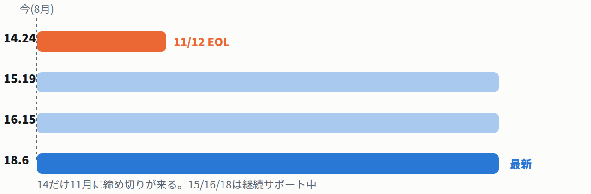
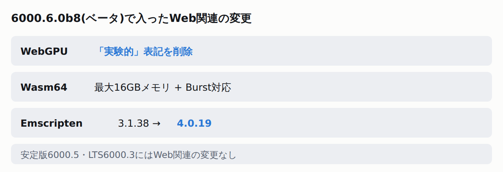
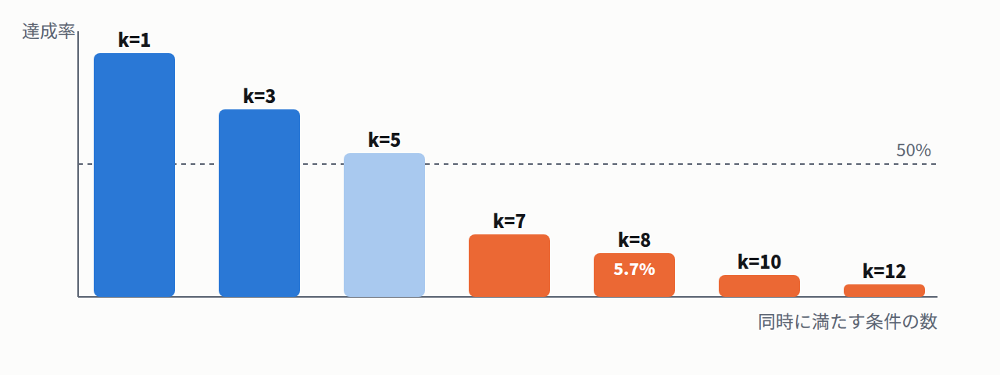
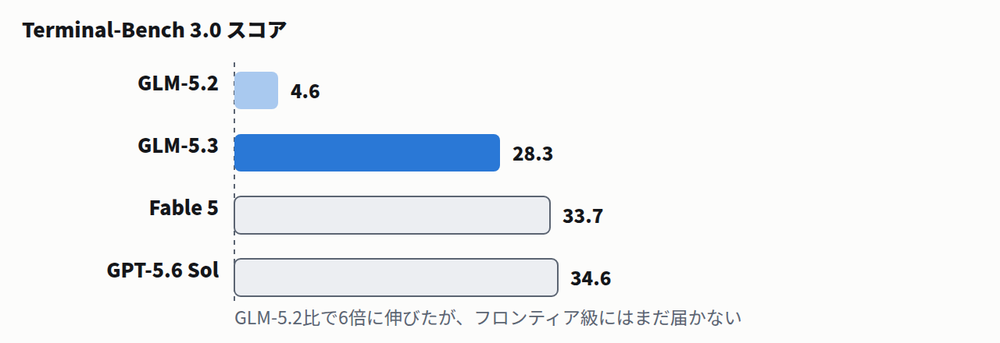

⭐ 今日の3行まとめ
Claude Code 2.1.232で、サブエージェントの並行実行がデフォルトの挙動になった
会話とキャッシュを引き継ぐforkが標準に。同時にPowerShellやWindowsのシンボリックリンクを悪用した権限まわりの不具合も修正。
PostgreSQLの全サポート版が更新され、28件の脆弱性が一斉に塞がれた
うち14件は緊急度が高いCVSS 8.8で、任意コード実行につながるものも複数。更新後にGINインデックスの手動チェックが必要な場合あり。PG14は11月12日でサポート終了。
Z.aiの新モデル「GLM-5.3」は「オープンウェイト最強」を名乗るが、当日時点で重みは未公開だった
「安全性審査のため2週間後に公開」と説明。自社ベンチマークでも脆弱性の「発見」は強いが「攻撃」はFable 5やGPT-5.6 Solに大差で負けている。
目次
今日から効いてくる実務のアップデート(4件) Web開発・インフラ(3件) クライアント技術(3件) 技術・研究(2件) モデル・業界(2件)
🧰 今日から効いてくる実務のアップデート4件
Anthropic
Claude Code 2.1.232で、サブエージェントの同時実行が「デフォルトで動く」ように変わった
8/13
✓ 公式確認済
Claude Code
v2.1.232
サブエージェントとは、Claude Codeが本体とは別に呼び出す「作業担当のAI」のこと。その中でも会話の続きをそのまま複製して並行で動かす「fork」が、これまでオプトインだったのが標準の挙動 になりました。forkしたサブエージェントは会話全体とプロンプトキャッシュ(過去のやり取りの再利用可能な記憶)を引き継ぎ、対話セッション中に生成される他のエージェントも既定でバックグラウンド実行になります。
知らないうちに並行実行が増える。 fork型サブエージェントを使う設定なら、今日から明示的なオプトインなしに会話・キャッシュを引き継いで動きます。自動化スクリプトの前提が変わっていないか確認を。セッションを名前で呼べるようになった。 プロンプト内で「@」に続けてセッション名を書くと、Claudeが`SendMessage`でそのセッションに直接話しかけます。権限まわりの不具合を複数修正。 本来許可されていないファイルに書き込めてしまうケースが直りました。例えばWindowsでは、ショートカットの一種「シンボリックリンク」を経由すると、Claude Codeの権限チェックをすり抜けて書き込めてしまうことがありました。GitLabのトークンも自動マスク対象に。 `glrt-`や`glpat-`など複数プレフィックスのトークンをログ・出力から隠すようになりました。
もう少し詳しく
あわせて直った不具合
ネストしたgitリポジトリが親ディレクトリの信頼設定を継承してしまう問題(各リポジトリで個別に信頼確認が必要になった)、Bashのリダイレクト`< file`が引数指定と同じ権限チェックを受けていなかった問題も修正されています。8月12日のv2.1.229では、`/commit-push-pr`が`--force`や`--no-verify`など危険フラグ付きのgit/ghコマンドを自動承認しないよう変更されました。
注意
この記事は挙動変更の告知そのものであり、Anthropicの公式リリースノートに基づいています。「デフォルト化」によって既存の自動化やCI連携がどう変わるかは、各自の設定で確認してください。
出典
Claude Code Changelog(公式)
OpenAI
ChatGPTのLibraryから、Google Driveのファイルを直接開いて編集できるようになった
8/13
⚠ 報道ベース
ファイル処理
Plus / Pro / Enterprise
Google Driveプラグインを接続していれば、Drive内のファイルをLibraryから直接見て、コピーを作らずに元ファイルへ書き戻せる ようになりました。Google Docs・Sheets・Slidesは会話の隣に開いたまま作業できます。
再アップロードが要らない。 チャットの入力欄(composer)や@メンションから、共有されたファイルも含めてDrive内のファイル・フォルダをそのまま呼び出せます。対応が支援できる範囲でのみ、元ファイルを直接更新。 対応形式ではその場で保存され、コピーが増えません。まずWeb版から、Plus / Pro / Enterprise / Edu / Healthcare / Business向け。 モバイル対応は追って提供予定です。
もう少し詳しく
注意
OpenAI公式のリリースノートページに直接アクセスできず(Cloudflareの検証画面でブロック)、内容はミラーサイトに転載された全文と9to5Macの報道で確認しています。同じ「今週の機能追加」に含まれるという「Quizzes」機能は、OpenAI公式リリースノートのミラー本文には記載がなく、9to5Mac記事内のOpenAI社員のX投稿引用のみで言及されています。公式発表そのものでは確認できていません。
出典
9to5Mac
GitHub
GitHub Copilotの週次アップデート — CLIに`/rewind`、プラグインをエディタ横断で使い回せる仕組みがGAに
8/13-14
✓ 公式確認済
Copilot
VS Code 1.133
週次リリースの目玉はAgent Plugins 1.0の正式提供(GA) で、1つ作ったプラグインをVS Code・Copilot CLI・SDK・Copilot appの間で使い回せます。CLIには`/rewind`が追加され、gitを使わずに変更を元に戻せる ようになりました。
Grok 4.6がCopilotに追加。 ただしBusiness/Enterpriseでは管理者がポリシーを有効化するまで既定でOFF です。課金はプロバイダーの定価に基づく従量制。CLIの`/tasks`でサブエージェントを一覧管理。 エージェントの実行中でもプロンプトやシェルコマンドをキューに積めるようになりました。VS Code 1.133では、Claudeセッション内でモデルを切り替え可能に。 ターンごとにClaude BYOKとCopilot内蔵モデルを選べます。
もう少し詳しく
その他
Kimi K3がPro/Pro+/Max/Business/Enterpriseへ展開中。MAI-Code-1.1-Flashはネイティブ画像理解に対応。
出典
GitHub Changelog(週次リリース) / GitHub Changelog(Grok 4.6)
Cursor
CursorのCloud Agentsが「Builds」で起動3倍速に — 追加費用なし
8/13
✓ 公式確認済
Cursor
Cloud Agents
開発環境のコピーをバックグラウンドで事前に用意しておく「Builds」機能が入り、エージェントが毎回ゼロから環境構築する代わりに用意済みの環境で起動 するようになりました。起動は10倍速、最初のトークンが出るまでは3倍速とのことです。
新規環境は自動で有効。 既存環境は「Cloud Agentsダッシュボード → Builds タブ → Enable Builds」で手動有効化が必要です。壊れたビルドは使われない。 依存関係の更新で環境が壊れても、直前の成功ビルドを使い続け、裏でデバッグしている間もエージェントは動き続けます。
もう少し詳しく
🧑💻 Web開発・インフラ3件
PostgreSQL
PostgreSQL全サポート版が更新 — 28件の脆弱性を一括修正、うち14件は緊急度の高いCVSS 8.8
8/13
✓ 公式確認済
脆弱性
要対応
18.6・17.11・16.15・15.19・14.24が同時リリースされました。28件のセキュリティ修正と110件超のバグ修正 を含む、通常より大きめの更新です。危険度は「CVSS」という0〜10のスコアで表され、数字が大きいほど深刻です。

PG14を使っているなら、11月12日までに18か17への移行計画が必要
更新するだけでは終わらない場合がある。 検索を高速化する仕組み「GINインデックス」を使うテーブルは、更新後に内部の行数カウント(`reltuples`)が異常値(Infinityなど)になっていないか公式が案内するクエリで確認が必要。放置すると自動お掃除機能(autovacuum)が二度と走らなくなります。14/15/16はレプリケーション(複製先サーバー)に注意。 古いマイナーバージョンの本体から更新履歴(WAL)を受け取ると複製先がお互い待ち合ったまま固まる(自己デッドロック)回帰が今回のバグ修正対象。ローリング更新の順序に影響します。PG14は2026年11月12日でサポート終了。 移行の計画が必要な人はここが締め切りです。
もう少し詳しく
CVEの一例(公式一覧より)
正規表現・`to_char`・`pg_stat_statements`・`pg_dump`のヒープバッファオーバーフロー(いずれもCVSS 8.8、任意コード実行につながる)、`EXTRACT`引数経由のSQLインジェクション(CVSS 8.8)、`psql`の`COPY FROM STDIN`が失敗時にデータ行をpsqlコマンドとして処理する不具合(CVSS 8.1)。CVSS 8.8は公式一覧全体で14件あり、うち任意コード実行につながる旨が明記されているものは9件です。
訂正
一部の二次情報が「30件の脆弱性」と報じていますが、公式発表とCVE一覧を数えた結果は28件でした。
出典
PostgreSQL公式アナウンス
Cloudflare
Cloudflare、Worker単位でAccessを強制できるように — 「vibe codingで作って公開範囲を間違える」事故対策
8/14
✓ 公式確認済
Workers
セキュリティ
これまでCloudflare Accessはホスト名単位でしか設定できず、Workerにカスタムドメインを後から足すと認証なしでアクセスできる穴 が構造的に生まれていました。今回、Workerそのもの・アカウント全体にAccessを紐づけられるようになり、この穴が塞がれます。
優先順位はホスト名 > Worker > アカウントの順。 最も具体的な設定が勝ちます。同日、無許可の「MCP」通信を見つける機能も発表。 MCPはAIアシスタントが外部ツールを呼び出す際の共通規格です。固定のホスト名やパスを使わないため通常のHTTPS APIと見分けが付きにくく、Cloudflare Gatewayが通信の特徴からMCP通信を見つけ、許可した経路以外のアクセスを制御できるようにします。
もう少し詳しく
対応要否
Cloudflare Workers + Access(Cloudflare One)を使っている人は、既存構成でホスト名単位の穴が残っていないか棚卸しする価値があります。
出典
Cloudflare Blog / Cloudflare Blog(MCP検知)
Vercel
Vercel CDNがEncrypted Client Hello(ECH)に対応 — 設定不要で自動有効
8/15
✓ 公式確認済
TLS
Vercel DNS
TLSハンドシェイクの接続先ホスト名(SNI)を暗号化するECH が、Vercel DNSで管理しているドメイン向けに自動で有効になりました。設定は不要です。
対象はVercel DNS管理ドメインのみ。 プラットフォーム側で自動有効化され、対応ブラウザ(最新のChrome・Edge・Firefox)から見ると接続先は共有ホスト名`vercel-ech.com`に見えます。SNIベースの監視・フィルタリングに影響しうる。 社内でSNIを見てホスト名を振り分けるファイアウォールやログ基盤がある場合、挙動が変わる可能性があります(公式告知には明記なし)。
もう少し詳しく
📱 クライアント技術3件
Google
androidx.webkit 1.17.0が安定版に — `loadUrl`を置き換える`navigate()`、WebViewは Chromeより先にv152へ
8/12(直近1週間)
✓ 公式確認済
WebView
Android
`WebView#loadUrl`を置き換える`WebViewCompat#navigate()`が安定版に入りました。追跡可能な`Navigation`オブジェクトを返すため、1画面に複数WebViewがある場合や並行遷移の追跡 がしやすくなります。
lintルールが新規追加。 カスタム`WebViewClient`を使っていて`onRenderProcessGone`未実装だと、既存プロジェクトのビルドで新しく警告が出るようになります。HTTPキャッシュの容量制御や、favicon自動取得の無効化も追加。 静的コンテンツが多いアプリのキャッシュ肥大やメモリ消費を抑えられます。`navigate()`はWebView M151以上が必要です。Android System WebViewはv152が8月12日配信。 同日時点でChrome for AndroidのChrome 152は「一部ユーザー向けearly stable」段階で、WebViewのバージョン進行はChrome本体と同期していません 。「Chromeがまだ151だからWebViewも151のはず」という前提でのテストは外れます。
もう少し詳しく
あわせて確認
Chrome 151安定版(8/11)ではV8・TabStrip・Extensions・HTML・Blinkのuse-after-free 5件(いずれもHigh)を修正済み。HTML/Blinkのレンダラ脆弱性はWebView埋め込みアプリにも影響するため、アプリ側では`onRenderProcessGone`の実装が緩和策になります。
出典
Android Developers(androidx.webkit) / Google System Services Release Notes / Chrome Releases
Unity
Unity 6.6ベータで、WebGPUから「実験的」の表記が外れた — Emscriptenも4.0.19に更新
8/12(直近1週間)
✓ 公式確認済(ベータ)
Unity Web
6000.6
6000.6.0b8のリリースノートに「WebGL: Removed the experimental tag from WebGPU」の1行。マニュアルを見比べると、6.5版にあった「WebGPUは実験的機能」という注意書きが6.6版では丸ごと削除 されています。

安定版・LTSのマイナー更新にはWeb関連の変更が無く、動きは6.6ベータに集中している
ブラウザで動くWebGLビルドが、最大16GBのメモリを扱えるように。 「Wasm64」という64ビット対応の仕組みで上限が広がり、処理を高速化する「Burst」機能も一緒に使えるようになりました。大規模プロジェクトのWebビルドでメモリ上限に当たりにくくなります。C/C++コードをWeb用に変換する土台「Emscripten」が3.1.38 → 4.0.19に大幅更新。 外部ライブラリ(ネイティブプラグイン)を使っているプロジェクトは6.6での再ビルドが必要になる可能性があります。互換性確認用に「Web Platform向けプラグイン設定」も新設。progressive asset loading(シーン単位の段階読み込み)も6.6に前倒しで搭載。 7月時点のロードマップ報道では次のLTS(6.7)予定と伝えられていましたが、8月12日のベータには既に入っています。
もう少し詳しく
実機バグ修正も
モバイルGPUが`float32-blendable`拡張を持たない場合のWebGPUエラーをb8で修正。「一部のモバイル端末で発生」と公式が明記しており、機種依存のタイプの不具合でした。
注意
現時点では6000.6系のベータのみの変更です。安定版6000.5.8f1・LTS6000.3.22f1(いずれも8月12〜13日リリース)のリリースノートにWeb関連の変更はありませんでした。
出典
Unity Manual 6000.6(WebGPU) / Unity 6000.6.0b8 公式リリースノート
VRChat
VRChat 2026.3.1が2連発リリース — クライアントは動いたが、SDKは6月から止まったまま
8/12-13
✓ 公式確認済
VRChat
Build 1885/1886
8月12日にBuild 1885、13日にBuild 1886(p1)と立て続けに更新。目玉はSDF(符号付き距離場)によるステッカー・絵文字の描画改善と、`VRCObjectSync`の同期信頼性向上 です。一方でワールド制作に使うSDKは6月17日の3.10.4から動きがありません。
Androidの動画再生バグを回避。 `rtspt://`のURLを内部で`rtsp://`に置き換えるようになり、ExoPlayerの制約で動かなかった動画がQuest等で再生できるようになります。`VRCObjectSync`の最終位置が全員で一致しやすく。 回線が遅いユーザーがワールド原点に一瞬表示されてから正しい位置へ移動する、という現象が起きにくくなりました。公式が「SDKはまだ」と明言。 リリースノートに「関連する修正を可能にするSDKは今回のパッチには含まれない、次回に入る」と明記されています。
もう少し詳しく
予告(未リリース)
8月13日のDeveloper Updateで、Udonの毎フレーム処理を減らす`VRCBillboard.Register()`(オブジェクトをローカルプレイヤーに向ける)と`AttachTransformToBone()`(アバターのボーンへの追従)がSDKに追加予定と案内。ただし「リリースまで仕様は変わりうる」と公式が明記しており未確定です。
出典
VRChat公式リリースノート(2026.3.1) / 同(2026.3.1p1) / Developer Update
🔬 技術・研究2件
arXiv
プロンプトに条件を7個詰め込むと、どのモデルも半分以下しか守れなくなる — 「計画させる」対策は効果ゼロ
8/12
✓ 公式確認済
研究
プロンプト設計
15モデル・36種類の制約・36万9753件のチェックを使った検証で、同時に満たすべき条件が7個を超えると最強のモデルでも成功率が50%を割る ことが分かりました。個々の条件の通過率はゆるやかにしか落ちないのに、全部同時に満たす確率は掛け算で崩れます。

個別の条件通過率は約41%を保っても、8個同時だと成功率は5.7%まで落ちる
「先に計画させる」は閾値を1ミリも動かさない。 事前にCoTで計画させても、崩壊が始まる制約数は変わりませんでした。自己修正・複数回試行も焼け石に水。 生成後の自己修正やbest-of-5の再試行は、崩壊点をわずか1〜2個分先送りするだけでした。効くのは「1条件あたりの精度そのものを上げる」ことだけ。 プロンプトへの条件の積み増しには構造的な上限があるという結論です。
もう少し詳しく
評価方法
採点はすべてルールベースの検証器で行い、LLM-as-a-judgeは使っていません。評価対象はGPT・Claude・Gemini・Llama・Qwen・DeepSeek・Kimi・Grokの主要モデル群。
開発者への意味
システムプロンプトに出力スキーマ・安全境界・推論手順・文字数などを積み上げるほど、実際に守られる条件数は5〜6個が現実的な上限です。分割するか、各条件の精度そのものを上げる設計が必要になります。
出典
arXiv:2608.12426
arXiv
過去の実行ログをそのまま貼るより、「今回向けに要約し直す」方が精度10.7pt高くトークンは半分
8/13
✓ 公式確認済
研究
コンテキスト管理
2391件のタスクで検証したところ、過去のエージェント実行ログをそのままコンテキストに入れる方式より、再利用可能な手順・取り直すべき値・適用条件だけを抜き出したメモに変換する方式 が成功率10.7ポイント上回り、使うトークン量もほぼ半分になりました。
「検索」と「渡し方」は別問題。 候補の探し方は同じにしたまま、渡す情報の形だけを変えて比較したのがこの研究のポイントです。ログが長くなるほど、生ログをそのまま貼る方式は分が悪くなる。 タスクが変わるたびに変わる値(ログイン先URLなど)を毎回引き直す前提のメモの方が有効でした。保存は豊かに、投入は絞る。 ログ自体は詳細に保存しつつ、実際にモデルへ渡すのは今回のタスク向けに書き直した短い要約、という設計が結論です。
もう少し詳しく
実験条件
WebArena・WorkArena・AppWorldの3ベンチマーク、軌跡生成にDeepSeek-V4-Proを使用。何もメモを使わない場合と比べ、汎用要約だけでも9.5ポイント改善、そこからこの手法でさらに伸びています。
出典
arXiv:2608.12847
🏢 モデル・業界2件
Z.ai
Z.aiが「オープンウェイト最強」のGLM-5.3を発表 — なのに当日、重みはまだ公開されていない
8/14
✓ 公式確認済
新モデル
オープンウェイト
「重み」とは学習済みAIモデルの中身そのもの、「オープンウェイト」とはそれを誰でもダウンロードできる形で公開するモデルを指します。Z.aiは「コーディング向けオープンウェイトモデルとして最も高性能」と発表しましたが、公式ブログ自身に「安全性評価と対策が終わる2週間後に重みを公開する」 と書かれています。発表時点でHugging Faceにモデルは存在しません。

Terminal-Bench 3.0は4.6→28.3に伸びたが、フロンティア級の30台にはまだ差がある
ベースモデルは同じ、伸びたのはポスト学習だけ。 GLM-5.2と同じベースモデルのまま追加学習し、Terminal-Bench 3.0は4.6→28.3、DeepSWE v1.1は46.2→66.9に改善。出力トークンは減りながら精度は上がっています。「最強」の主張は自社の表とも食い違う。 同じブログの比較表で、Terminal-Bench 2.1やDeepSWEなど4項目はKimi K3の方が上回っています。脆弱性の「発見」は強いが「攻撃」は大差で負ける。 脆弱性発見のCyberGymでは他モデルを上回る一方、攻撃の実行(ExploitBench)はFable 5の78.0%・GPT-5.6 Solの76.5%に対しGLM-5.3は54.4%。重み公開を遅らせた理由はこの発見能力の伸びだと読めます。
もう少し詳しく
訂正・注意
一部の二次報道は「743Bパラメータ」としていますが、同じベースを使うGLM-5.2のHugging Face上のメタデータを直接確認したところ約753.3Bでした。GLM-5.2は6月にMITライセンスで即日公開されており、今回の「2週間保留」はGLMシリーズとしては方針転換にあたります。API価格は公式ドキュメントに「近日公開」とあるのみで未確認です。なお、ExploitBenchの78.0%というスコアは、Z.ai公式ブログの地の文では「Mythos 5」、比較表では「Fable 5」という異なる名前で言及されており、Z.ai自身の資料内で表記が揺れています(数値は両箇所で一致)。
出典
Z.ai公式ブログ / Z.ai公式ドキュメント
OpenAI
OpenAIが「Ultrafast」を限定プレビュー — GPT-5.6 Solが最大14倍速、Cerebras製チップで動く
8/13
✓ 公式確認済
新機能
限定プレビュー
Cerebras社のウェハスケールチップ上でGPT-5.6 Solを動かす新サービス階層「Ultrafast」の先行公開です。標準処理と比べて最大14倍速、毎秒最大750トークン を生成します。
まだ一部顧客限定。 本日時点では「選ばれた顧客向けの限定プレビュー」段階。価格は未公開です。想定用途はインシデント対応や金融の不正検知など「1秒を争う」場面。 OpenAI社内でもインシデント対応とリサーチに使っているとのことです。
もう少し詳しく
注意
OpenAI公式ページに直接アクセスできず(Cloudflareの検証画面でブロック)、テキストミラー経由で本文を確認しました。「Claude比11倍」「Opus Fast比5倍」などの倍率はCerebras側の計測で、OpenAI本文には記載がありません。
出典
OpenAI公式 / Cerebras Blog